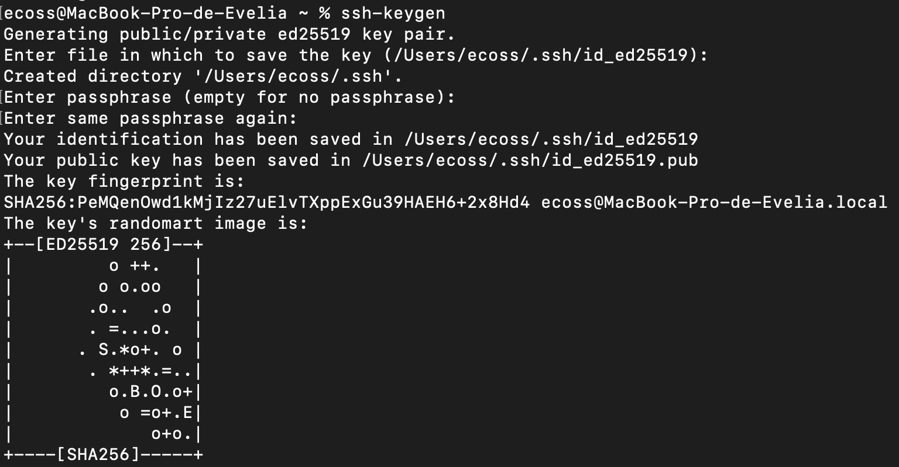
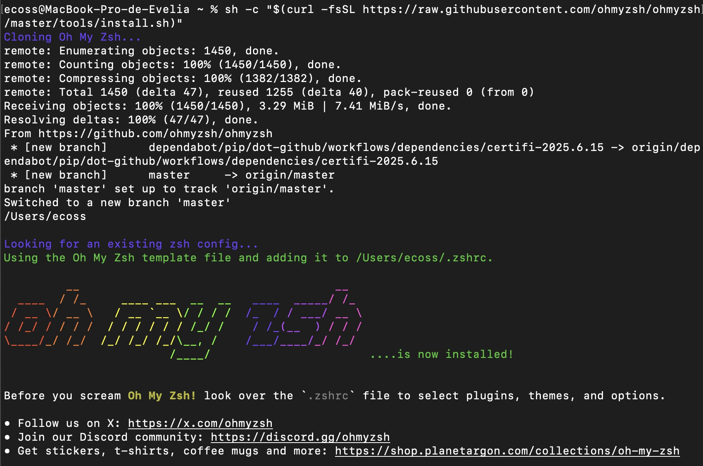
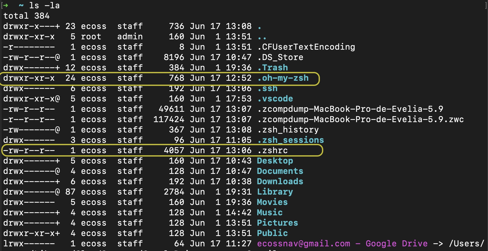

Generación y configuración de llaves SSH (keygen)
Objetivo: Configurar llaves de acceso seguras (SSH keys) para conectarse a servidores remotos o supercomputadoras sin necesidad de ingresar una contraseña en cada sesión, facilitando una autenticación más rápida y segura.
Paso 1. Generar la llave en tu computadora
Abre una terminal y ejecuta ssh-keygen.
# Instalar ssh-keygen
sudo apt-get install ssh-keygen
# Ejecutarlo
ssh-keygenCuando ejecutes el programa te va a preguntar si quieres generar una frase, identificar y como quieres nombrar la llave. Si no quieres complicarte solo da 3 veces ENTER, hasta tener una pantalla como la siguiente:

Posteriormente, tendras una carpeta llamada .ssh/, entra en esa carpeta y tendras dos archivos, si no los renombraste tendran el nombre de id_ed25519.
id_ed25519→ tu llave privada (no la compartas)id_ed25519.pub→ tu llave pública (esta sí se comparte con servidores)
Paso 2. Agrega tu llave pública al servidor o servicio remoto
Vamos a copiar la llave publica id_ed25519.pub en el servidor. Recuerda que si estas dentro de la carpeta .ssh en tu computadora, solo pondrias el nombre del archivo id_ed25519.pub.
Verifica el contenido de tu llave pública:
cat ~/.ssh/id_ed25519.pubModifica en el siguiente ejemplo el usuario y la ruta del servidor. El archivo debe almacenarse dentro de la carpeta .ssh en el servidor.
scp .ssh/id_rsa.pub usuario@ruta.servidor:/home/usuario/.sshPaso 3. Modifica el archivo de llaves en el servidor 🌱
Posteriormente, entra al servidor y ubicate en la carpeta .ssh que debe encontrarse en tu HOME.
# moverse a la carpeta
cd .ssh/
# ver los archivos contenidos dentro de la carpeta
ls -laVamos a unir la información de la llave publica id_ed25519.pub con las llaves ya existentes en el servidor relacionadas con tu usuario, llamandose ek archivo authorized_keys. Generamos un archivo llamado keys como una buena practica para no sobreescribir algo que no deseamos.
cat authorized_keys id_ed25519.pub > keysAhora que estamos seguros de no haber modificado nada, podemos sustituir el archivo authorized_keys con el nuevo archivo keys.
mv keys authorized_keysPaso 4. Entra al servidor sin usar tu contraseña
Desde la terminal de tu computadora entra al servidor empleando:
ssh usuario@ruta.servidorPaso 5. Identifica tu entorno (bashrc o zshrc) ⚙️
Linux
En Linux ya existe un archivo creado en el sistema con el nombre .bashrc localizado en HOME y se puede acceder de la siguiente manera:
cat ~/.bashrcWindows
En Windows debemos crear el archivo .bashrc, te recomiendo primero contar con Git Bash para poder contar con los comandos.
nano ~/.bashrcAgrega esto en el archivo:
# To the extent possible under law, the author(s) have dedicated all
# copyright and related and neighboring rights to this software to the
# public domain worldwide. This software is distributed without any warranty.
# You should have received a copy of the CC0 Public Domain Dedication along
# with this software.
# If not, see <https://creativecommons.org/publicdomain/zero/1.0/>.
# /etc/bash.bashrc: executed by bash(1) for interactive shells.
# System-wide bashrc file
# Check that we haven't already been sourced.
([[ -z ${CYG_SYS_BASHRC} ]] && CYG_SYS_BASHRC="1") || return
# If not running interactively, don't do anything
[[ "$-" != *i* ]] && return
# If started from sshd, make sure profile is sourced
if [[ -n "$SSH_CONNECTION" ]] && [[ "$PATH" != *:/usr/bin* ]]; then
source /etc/profile
fi
# Warnings
unset _warning_found
for _warning_prefix in '' ${MINGW_PREFIX}; do
for _warning_file in ${_warning_prefix}/etc/profile.d/*.warning{.once,}; do
test -f "${_warning_file}" || continue
_warning="$(command sed 's/^/\t\t/' "${_warning_file}" 2>/dev/null)"
if test -n "${_warning}"; then
if test -z "${_warning_found}"; then
_warning_found='true'
echo
fi
if test -t 1
then printf "\t\e[1;33mwarning:\e[0m\n${_warning}\n\n"
else printf "\twarning:\n${_warning}\n\n"
fi
fi
[[ "${_warning_file}" = *.once ]] && rm -f "${_warning_file}"
done
done
unset _warning_found
unset _warning_prefix
unset _warning_file
unset _warning
# If MSYS2_PS1 is set, use that as default PS1;
# if a PS1 is already set and exported, use that;
# otherwise set a default prompt
# of user@host, MSYSTEM variable, and current_directory
[[ -n "${MSYS2_PS1}" ]] && export PS1="${MSYS2_PS1}"
# if we have the "High Mandatory Level" group, it means we're elevated
#if [[ -n "$(command -v getent)" ]] && id -G | grep -q "$(getent -w group 'S-1-16-12288' | cut -d: -f2)"
# then _ps1_symbol='\[\e[1m\]#\[\e[0m\]'
# else _ps1_symbol='\$'
#fi
case "$(declare -p PS1 2>/dev/null)" in
'declare -x '*) ;; # okay
*)
export PS1='\[\e]0;\w\a\]\n\[\e[32m\]\u@\h \[\e[35m\]$MSYSTEM\[\e[0m\] \[\e[33m\]\w\[\e[0m\]\n'"${_ps1_symbol}"' '
;;
esac
unset _ps1_symbol
# Uncomment to use the terminal colours set in DIR_COLORS
# eval "$(dircolors -b /etc/DIR_COLORS)"
# Fixup git-bash in non login env
shopt -q login_shell || . /etc/profile.d/git-prompt.sh
# alias
alias ll="ls -la" # this changes the default ll on git bash to see hidden files.Macbook - OS
Checa si en tu HOME encuentras un archivo llamado bash_profie, si no es asi, sigue los siguientes pasos.
En Mac OS X el archivo ~/.zshrc no existe por defecto, así que tienes que crearlo. Recomiendo instalar Oh My Zsh que automaticamente te genera este archivo y te da un sin fin de configuraciones para la terminal. Coloca esto en tu terminal:
sh -c "$(curl -fsSL https://raw.githubusercontent.com/ohmyzsh/ohmyzsh/master/tools/install.sh)"Una vez que lo ejecutes te apareceran las siguientes instrucciones:

Si revisas tu HOME te daras cuenta de que ahora cuentas con una carpeta de configuraciones de Oh My Zsh y el archivo .zshrc.

Paso 6. Generar un alias en bashrc o zshrc
Una vez que ya conocemos como se llama el archivo de configuración de nuestro sistema operativo:
- En linux y en Windows el archivo se llama
.bashrc - En OS o Mac se llama
.bash_profileo.zshrc
Vamos a crear un alias para que cada que tu tecles una palabra entres al servidor sin problemas y sin usar tu contraseña. Abre el archivo de configuración con nano y agrega la siguiente linea al final del archivo:
alias unam="ssh usuario@ruta.servidor"Para Linux y Windows
nano ~/.bashrcAgrega el alias al final del archivo:
alias unam="ssh usuario@ruta.servidor"Despues de modificar el archivo .bashrc, debes volver a cargarlo usando:
source ~/.bashrcPara Mac
nano ~/.zshrcAgrega el alias al final del archivo:
alias unam="ssh usuario@ruta.servidor"Despues de modificar el archivo .zshrc, debes volver a cargarlo usando:
source ~/.zshrcPaso 7. Prueba tu llave
En mi caso mi alias es unam y me sirve para entrar al servidor de la UNAM, entonces esperaria que con solo poner esta palabra en mi terminal pudiera entrar.
unam